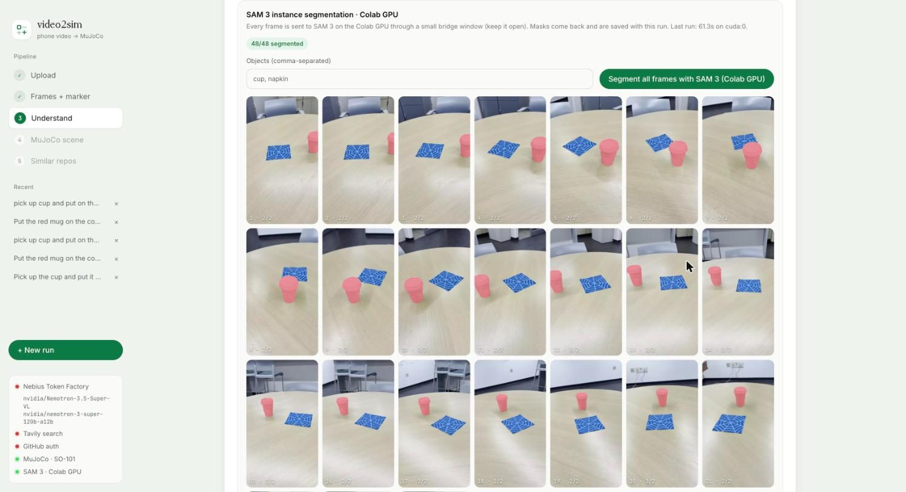
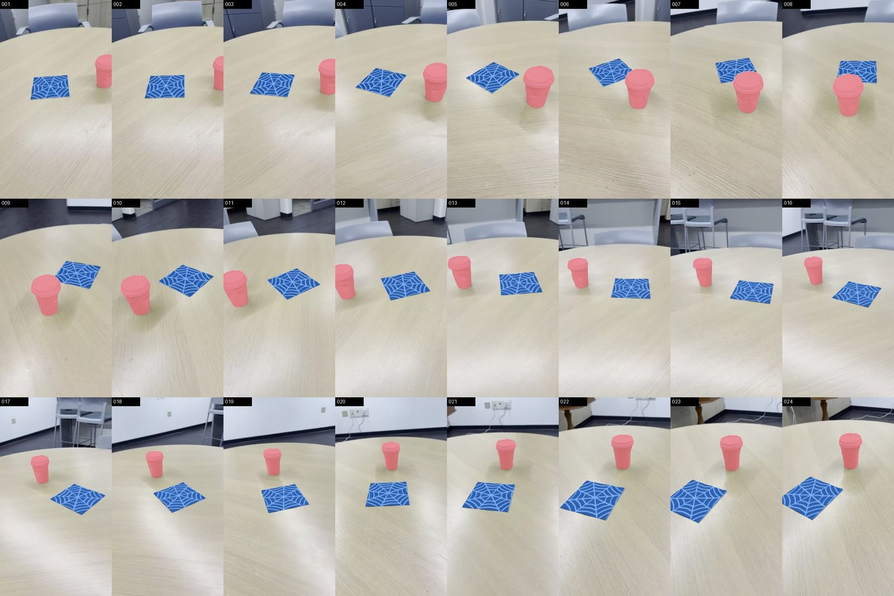

video2sim
Film a tabletop with your phone and say what the robot should do. video2sim turns the clip into a MuJoCo scene for the SO-101 arm: SAM 3 segments every object in every frame, the objects are measured and placed, and the task is set up in simulation.
Demo
Screenshots


How it works
- Upload a short phone video and type a command.
- Frames are extracted and the object names are read from the command.
- SAM 3, running on a Colab GPU, instance-segments every frame. The browser talks to it through Colab's private proxy, so nothing is exposed publicly.
- A vision model identifies the objects; the SAM 3 masks give their positions and sizes.
- A MuJoCo scene is built with the SO-101 arm, the objects and the goal, then rendered.